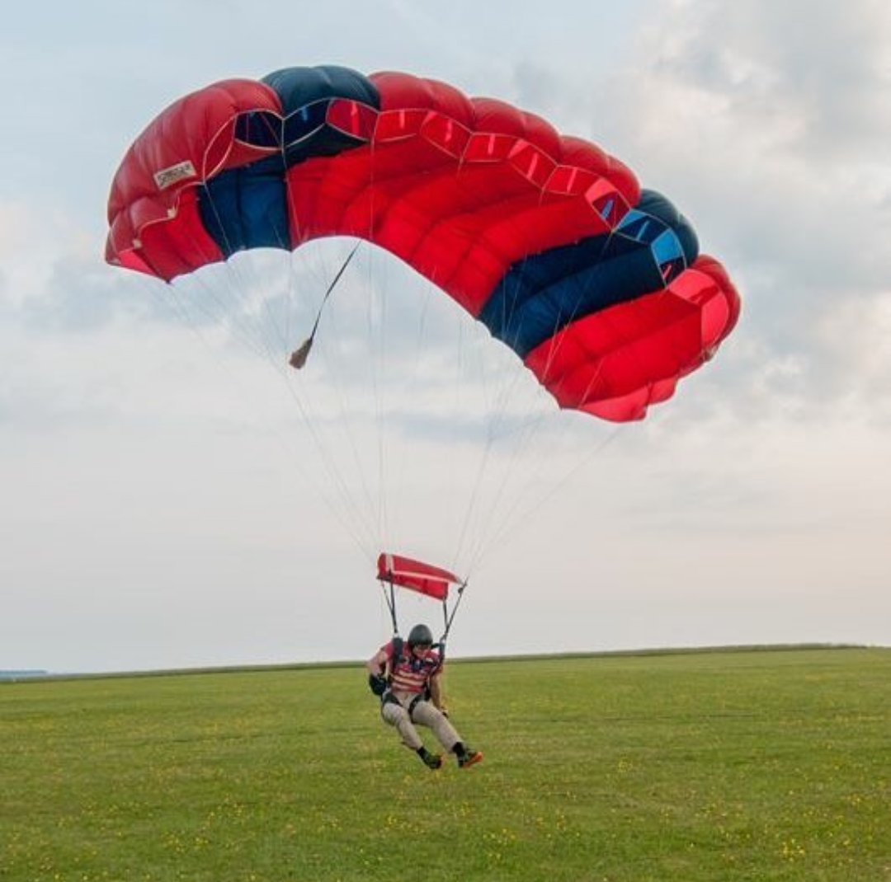
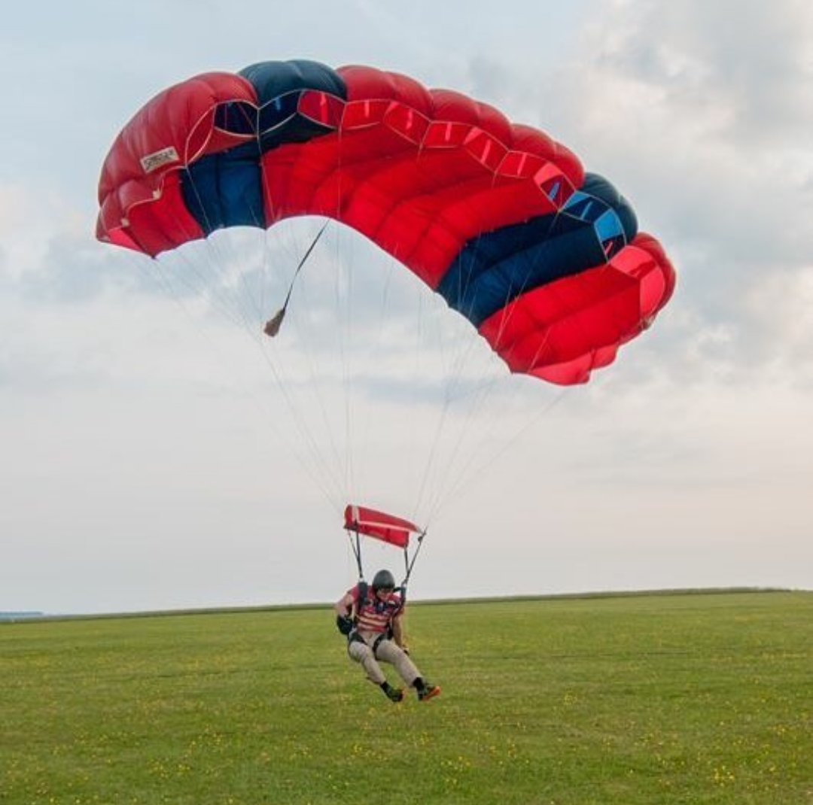

About Me
I am an ex British soldier and member of the Corps of Royal Engineers. Now living in the North East of England with my wife, dog and very soon, son. Over the course of my career, I have always strived towards continuous personal and professional development and it is a quality that I have taken with me into civilian life. Always adapting to new environments and relishing a challenge, I am never satisfied with the knowledge that something works and I am always trying to figure out the ‘how’ and the ‘why’. I have experience in many different areas being either a team member or team leader and even working on my own. From climbing mountains and leaping from aircraft, to fixing broken equipment, leading and managing teams and even building websites, there is no challenge too big and no amount that is ‘too much’ to learn. If I were working for you, I wouldn’t be satisfied with just being able to do my job. I’d want to be good enough to teach it.
 
